Lab 02
Statistical Graphics
Outline
tl;dr summary statistics and statistical graphics.
Objectives
This lab will guide you through the process of
- loading (or “attaching”) R packages with
library() - generating summary statistics for your data
- visualizing data with the grammar of graphics (gg)
- aesthetic mappings
- geometric objects
- facets
- scales
- themes
R Packages
We will be using the following packages:
To install these packages, run the following code in your console:
install.packages(
c("archdata", "palmerpenguins", "skimr", "ggplot2", "viridis")
)Data
penguins- Includes measurements for penguin species, island in Palmer Archipelago, size (flipper length, body mass, bill dimensions), and sex.
- package:
palmerpenguins - reference: https://allisonhorst.github.io/palmerpenguins/reference/penguins.html
DartPoints- Includes measurements of 91 Archaic dart points recovered during surface surveys at Fort Hood, Texas.
- package:
archdata - reference: https://cran.r-project.org/web/packages/archdata/archdata.pdf
The Library
R is an extensible programming language, meaning you can write R code to extend the functionality of base R. To share that code, R users will often bundle it into a package, a collection of functions, data, and documentation. You can think of packages like apps, but specifically for R. To make the functionality a package offers available in R, you have to load them in with the library() function (the technical term is attach).
You will occasionally encounter library() calls littered throughout an R script or R Markdown document. DO NOT DO THIS. You should always, always, always load all the packages you use at the beginning of a document. That way, people who read your code know exactly what packages you are using all at once and right away. To make this really, really explicit, I prefer to set this off with its own section that I call the “R Preamble.” In an R script, it looks like this:
# R PREAMBLE --------------------------------------------------------------
library(archdata)
library(ggplot2)
library(palmerpenguins)
library(skimr)
library(viridis)And in an R Markdown document, it looks like this:
---
title: "Week 02"
author: "Kenneth Blake Vernon"
date: "1/18/2022"
output: html_document
---
```{r setup, include = FALSE}
knitr::opts_chunk$set(
echo = TRUE,
message = FALSE,
warning = FALSE
)
```
## R Preamble
```{r packages}
library(archdata)
library(ggplot2)
library(palmerpenguins)
library(skimr)
library(viridis)
```
***
## Lab Exercises
***
## Homework Exercises
1.
Note that in an R script, the hashtag # tells R that the text that follows on the same line is not R code, but rather a comment. In an R Markdown document, it is markdown syntax that signals a section header. Another important difference is that you have to put the library() calls in a code chunk in R Markdown to signal that it is R code. In an R script, however, everything is assumed to be R code.
Exercises
- Open a new R Markdown document for this lab and copy the template above into that document, replacing the author with your name.
- Run each
library()call, either by highlighting them and hitting Ctrl + Enter (Cmd + Enter) or by clicking the green arrow in the top right of the code chunk.
Summary Statistics

Artwork by @allison_horst
Let’s use R to describe some properties of a sample of penguins from Palmer Station in Antarctica. These data became available in R when you loaded the palmerpenguins package. They aren’t currently visible in your environment (for complicated reasons), but trust me, they’re there. The name of the dataset is penguins, so you can call it that way.
head(penguins, n = 5)
## # A tibble: 5 x 8
## species island bill_length_mm bill_depth_mm flipper_length_~ body_mass_g sex
## <fct> <fct> <dbl> <dbl> <int> <int> <fct>
## 1 Adelie Torge~ 39.1 18.7 181 3750 male
## 2 Adelie Torge~ 39.5 17.4 186 3800 fema~
## 3 Adelie Torge~ 40.3 18 195 3250 fema~
## 4 Adelie Torge~ NA NA NA NA <NA>
## 5 Adelie Torge~ 36.7 19.3 193 3450 fema~
## # ... with 1 more variable: year <int>Central tendency
The central tendency is, as its name suggests, a value around which other values tend to cluster. There are two primary measures of central tendency: the mean and the median. As you may recall, the mean or average is simply the sum of a finite set of values, \(x_i\), divided by the number of values, \(n\).
\[\bar{x} = \frac{1}{n} \sum_{i=1}^{n} x_i\] This is the sample mean, which is an estimate of the central tendency of a population, \(\mu\). In R, you can calculate the mean by hand if you like, but it’s probably easier to use the built-in R function, mean(). Let’s use this to calculate the mean bill length of penguins.
mean(penguins$bill_length_mm)
## [1] NAWhoops! Need to set na.rm = TRUE to ignore missing values.
mean(penguins$bill_length_mm, na.rm = TRUE)
## [1] 43.92193An important limitation of the mean is its sensitivity to outliers, like rich people. If you calculate the mean household income in the United States, for example, the incomes of obscenely wealthy individuals like Jeff Bezos will pull that measure up, thus painting a much rosier picture of the US than the reality the rest of us live in. To address this, you should use the median as it is the “middle” number or value that evenly divides the sample in half.
median(penguins$bill_length_mm, na.rm = TRUE)
## [1] 44.45Dispersion
Dispersion describes the spread of data around its central tendency. Are the values tightly clustered around the central tendency or highly dispersed? Is there, in other words, a lot of variability? This is what dispersion seeks to characterize. As with the central tendency, it has two primary measures: variance and standard deviation. The variance of a sample is the mean squared error.
\[s^{2} = \frac{1}{n-1} \sum_{i=1}^{n} (x_i - \bar{x})^{2}\] This is an estimate of the population variance, \(\sigma^2\). To calculate the variance of a sample with R, use var().
var(penguins$body_mass_g, na.rm = TRUE)
## [1] 643131.1Whoa! That’s a really big number. Do penguins get that big? The answer, of course, is No. The number is large because variance is squared error, so this is in units of squared-grams, \(g^2\), not grams, \(g\). That makes it a really weird measure to think about. That’s why it is common to take the square root of the variance, to get the measure back into units of the data. This value is known as the standard deviation, \(s\). You can calculate it with the sd() function.
sd(penguins$body_mass_g, na.rm = TRUE)
## [1] 801.9545That’s about 1.8 pounds (if you prefer Imperial units).
Table summaries
Base R has a really nice summary() function that you can apply to a table like so:
summary(penguins)
## species island bill_length_mm bill_depth_mm
## Adelie :152 Biscoe :168 Min. :32.10 Min. :13.10
## Chinstrap: 68 Dream :124 1st Qu.:39.23 1st Qu.:15.60
## Gentoo :124 Torgersen: 52 Median :44.45 Median :17.30
## Mean :43.92 Mean :17.15
## 3rd Qu.:48.50 3rd Qu.:18.70
## Max. :59.60 Max. :21.50
## NA's :2 NA's :2
## flipper_length_mm body_mass_g sex year
## Min. :172.0 Min. :2700 female:165 Min. :2007
## 1st Qu.:190.0 1st Qu.:3550 male :168 1st Qu.:2007
## Median :197.0 Median :4050 NA's : 11 Median :2008
## Mean :200.9 Mean :4202 Mean :2008
## 3rd Qu.:213.0 3rd Qu.:4750 3rd Qu.:2009
## Max. :231.0 Max. :6300 Max. :2009
## NA's :2 NA's :2As you can see, this prints out summary statistics for the variables in your data. However, the printout is not easy to read and it provides a somewhat limited set of summary statistics. So, as an alternative, I would recommend the skim() function from the skimr package.
skim(penguins)
## -- Data Summary ------------------------
## Values
## Name penguins
## Number of rows 344
## Number of columns 8
## _______________________
## Column type frequency:
## factor 3
## numeric 5
## ________________________
## Group variables None
##
## -- Variable type: factor -------------------------------------------------------
## # A tibble: 3 x 6
## skim_variable n_missing complete_rate ordered n_unique
## * <chr> <int> <dbl> <lgl> <int>
## 1 species 0 1 FALSE 3
## 2 island 0 1 FALSE 3
## 3 sex 11 0.968 FALSE 2
## top_counts
## * <chr>
## 1 Ade: 152, Gen: 124, Chi: 68
## 2 Bis: 168, Dre: 124, Tor: 52
## 3 mal: 168, fem: 165
##
## -- Variable type: numeric ------------------------------------------------------
## # A tibble: 5 x 11
## skim_variable n_missing complete_rate mean sd p0 p25 p50
## * <chr> <int> <dbl> <dbl> <dbl> <dbl> <dbl> <dbl>
## 1 bill_length_mm 2 0.994 43.9 5.46 32.1 39.2 44.4
## 2 bill_depth_mm 2 0.994 17.2 1.97 13.1 15.6 17.3
## 3 flipper_length_mm 2 0.994 201. 14.1 172 190 197
## 4 body_mass_g 2 0.994 4202. 802. 2700 3550 4050
## 5 year 0 1 2008. 0.818 2007 2007 2008
## p75 p100 hist
## * <dbl> <dbl> <chr>
## 1 48.5 59.6 <U+2583><U+2587><U+2587><U+2586><U+2581>
## 2 18.7 21.5 <U+2585><U+2585><U+2587><U+2587><U+2582>
## 3 213 231 <U+2582><U+2587><U+2583><U+2585><U+2582>
## 4 4750 6300 <U+2583><U+2587><U+2586><U+2583><U+2582>
## 5 2009 2009 <U+2587><U+2581><U+2587><U+2581><U+2587>As you can see, there are three major sections of this printout: (i) Data Summary, (ii) Factor variables, and (iii) Numeric variables. The Data Summary gives you an overview of your table, with counts of the number of rows and columns, as well as counts of the different types of variables (factor, numeric, etc). The section on factor variables gives you counts for each level of the factor (for example, counts of the different species of penguins), as well as information about missing data. Finally, the section on numeric variables gives you information on missing data, as well as measures of dispersion and central tendency, including the mean, median (p50), and standard deviation (sd), the range or min and max values (p0 and p100), and the inner quartiles (p25 and p75).
Exercises
- Have a look at the
penguinsdata again. Usehead()to preview the first 15 rows. - With the
penguinsdata, calculate all of the following:- median body mass
- mean bill depth
- variance in bill depth
- standard deviation in bill length
The Grammar of Graphics
It’s easy to imagine how you would go about with pen and paper drawing a bar chart of, say, the number of penguins in each species in the penguins dataset. But, what if you had to dictate the steps to make that graph to another person, one you can’t see or physically interact with? All you can do is use words to communicate the graphic you want. How would you do it? Regardless of how you answer that question, you should see right away that one thing is essential. You and your illustrator must share a coherent vocabulary for describing graphics. That way you can unambiguously communicate your intent. That’s essentially what the grammar of graphics is, a language with a set of rules (a grammar) for specifying each component of a graphic.
In R, the ggplot2 package provides an elegant implementation of the grammar of graphics, and that’s what we’ll be using here. Basically, R is your illustrator, and ggplot2 is the language you are going to speak to R to make your graphics. So, how do we do that? Well, let’s start with the basics. Suppose we want to know if there’s some kind of relationship (an allometric relationship) among the Palmer Station penguins between their body mass and bill length. Here’s how we would visualize that.
ggplot(data = penguins) +
geom_point(
mapping = aes(x = body_mass_g, y = bill_length_mm)
)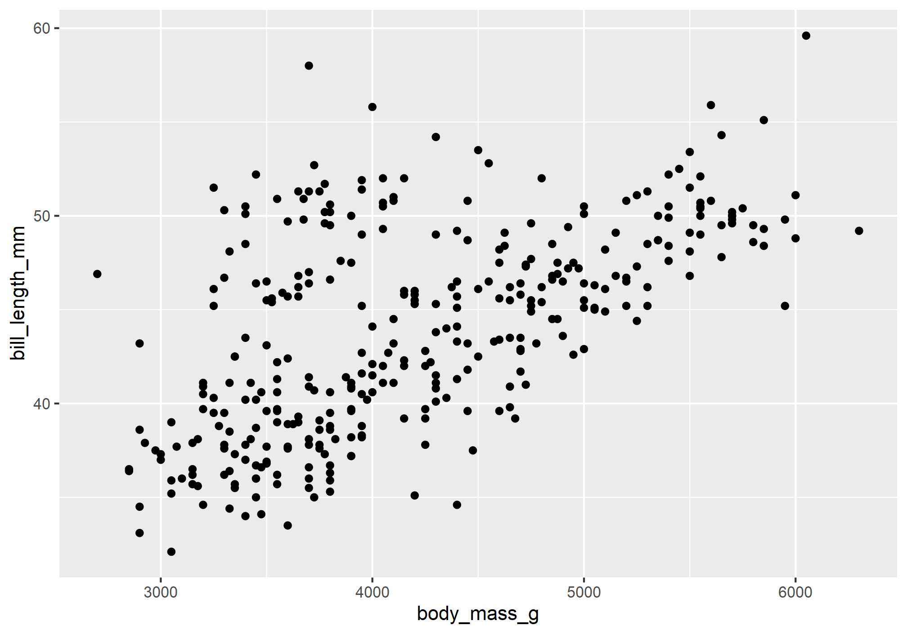
Here, we have created what is known as a scatterplot, a representation of the raw data as points on a Cartesian grid. There are several things to note about the code used to generate this plot.
- First, it begins with a call to the
ggplot()function. This takes adataargument. In this case, we say that we want to make a plot to visualize the penguins data. - The next function call is
geom_point(). This is a way of specifying the geometry we want to plot. Here we chose points, but we could have used another choice (lines, for example, or polygons). - Note that the
geom_point()call takes amappingargument. You use this to specify how variables in your data are mapped to properties of the graphic. Here, we chose to map thebody_mass_gvariable to the x-coordinates and thebill_length_mmvariable to the y-coordinates. Importantly, we use theaes()function to supply an aesthetic to the mapping parameter. This is always the case. - The final thing to point out here is that we combined or connected these arguments using the plus-sign,
+. You should read this literally as addition, as in “make this ggplot of the penguins data and add a point geometry to it.” Be aware that the use of the plus-sign in this way is unique to theggplot2package and won’t work with other graphical tools in R.
We can summarize these ideas with a simple template. All that is required to make a graph in R is to replace the elements in the bracketed sections with a dataset, a geometry function, and an aesthetic mapping.
ggplot(data = <DATA>) +
<GEOM_FUNCTION>(mapping = aes(<MAPPINGS>))One of the great things about ggplot, something that makes it stand out compared to alternative graphics engines in R, is that you can assign plots to a variable and call it in different places, or modify it as needed.
penguins_plot <- ggplot(data = penguins) +
geom_point(
mapping = aes(x = body_mass_g, y = bill_length_mm)
)
penguins_plot
Exercises
- Recreate the scatterplot above, but switch the axes. Put bill length on the x-axis and body mass on the y-axis.
- Fill in the template above to create a scatterplot of bill length (on the y-axis) by bill depth (on the x-axis).
Aesthetics
In the plot above, we only specified the position of the points (the x- and y-coordinates) in the aesthetic mapping, but there are many aesthetics (see the figure below), and we can map the same or other variables to those.
](https://clauswilke.com/dataviz/aesthetic_mapping_files/figure-html/common-aesthetics-1.png)
Commonly used aesthetics. Figure from Claus O. Wilke. Fundamentals of Data Visualization. O’Reilly, 2019.
Consider, for example, the fact that there are three penguin species in our dataset: Adelie, Gentoo, and Chinstrap. Do we think the relationship between body mass and bill length holds for all of them? Let’s add penguin species to our aesthetic mapping (specifically to the color parameter) and see what happens.
ggplot(data = penguins) +
geom_point(
mapping = aes(x = body_mass_g, y = bill_length_mm, color = species)
)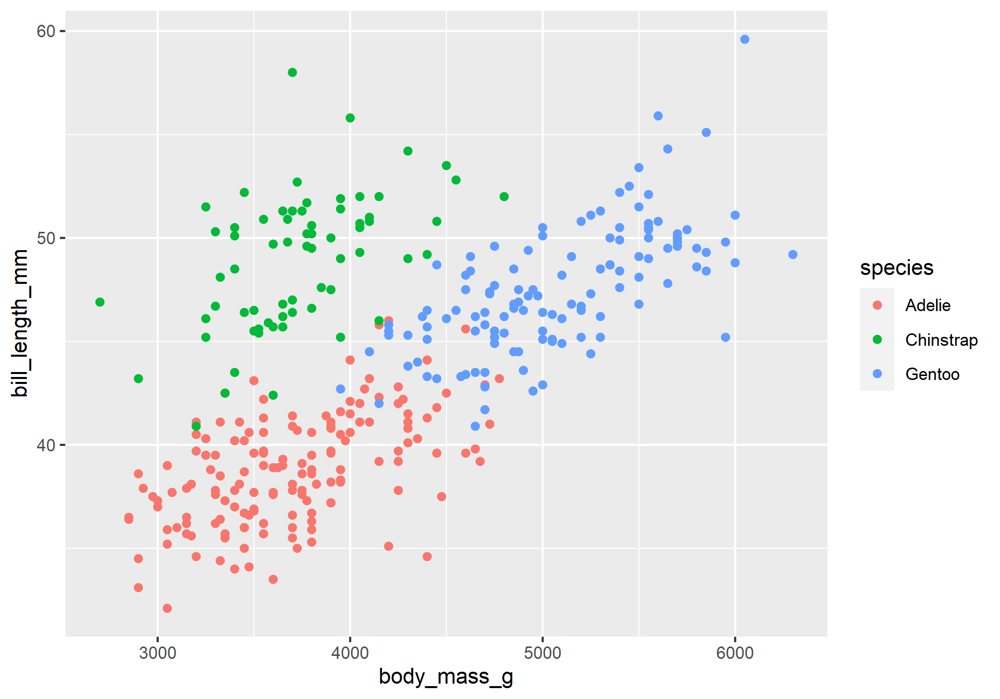
Notice that ggplot2 automatically assigns a unique color to each species and adds a legend to the right that explains each color. In this way, the color doesn’t just change the look of the figure. It conveys information about the data. Rather than mapping a variable in the data to a specific aesthetic, though, we can also define an aesthetic manually for the geometry as a whole. In this case, the aesthetics do not convey information about the data. They merely change the look of the figure. The key to doing this is to move the specification outside the aes(), but still inside the geom_point() function.
ggplot(data = penguins) +
geom_point(
mapping = aes(x = body_mass_g, y = bill_length_mm),
shape = 21,
size = 4,
color = "darkred",
fill = "darkgoldenrod1"
)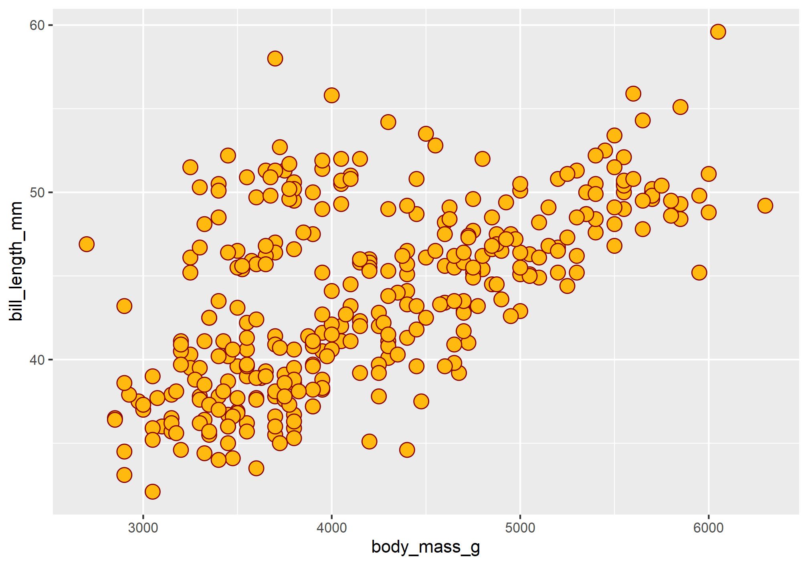
Notice that we specified the shape with a number. R has 25 built-in shapes that you can specify with a number, as shown in the figure below. Some important differences in these shapes concern the border and fill colors. The hollow shapes (0-14) have a border that you specify with with color, the solid shapes (15-20) have a border and fill, both specified with color, and the filled shapes (21-24) have separate border and fill colors, specified with color and fill respectively.
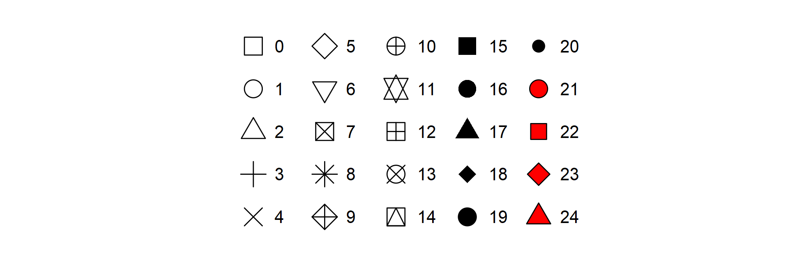
Exercises
- Change the code below to map the
speciesvariable to the x-axis (in addition to the color).
ggplot(data = penguins) +
geom_point(
mapping = aes(x = body_mass_g, y = bill_length_mm, color = species)
)What does this do to the position of the points?
Change the code below to map the
speciesvariable to the shape aesthetic (in addition to the color).
# hint: use shape = ...
ggplot(data = penguins) +
geom_point(
mapping = aes(x = body_mass_g, y = bill_length_mm, color = species)
)- Change the code below to map the
speciesvariable to the size aesthetic (replacing color).
# hint: use size = ...
ggplot(data = penguins) +
geom_point(
mapping = aes(x = body_mass_g, y = bill_length_mm, color = species)
)- For the following code, change the color, size, and shape aesthetics for the entire geometry (do not map them to the data).
ggplot(data = penguins) +
geom_point(
mapping = aes(x = body_mass_g, y = bill_length_mm),
color = , # <------- insert value here
size = , # <-------
shape = # <-------
)Geometries
Have a look at these two plots.
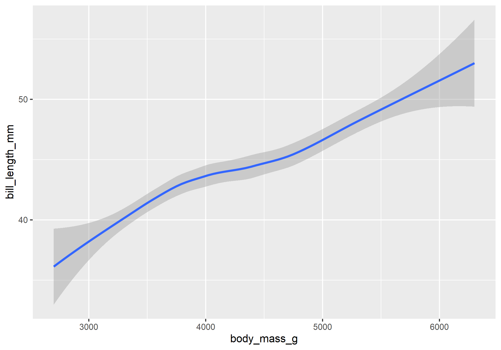
Both represent the same data, the same x and y variables, but they do so in very different ways. That difference concerns their different geometries. These are geometrical objects used to represent the data. To change the geometry, simply change the geom_*() function. For example, to create the plots above, use the geom_point() and geom_smooth() functions.
# left
ggplot(data = penguins) +
geom_point(
mapping = aes(x = body_mass_g, y = bill_length_mm)
)
# right
ggplot(data = penguins) +
geom_smooth(
mapping = aes(x = body_mass_g, y = bill_length_mm)
)While every geometry function takes a mapping argument, not every aesthetic works (or is needed) for every geometry. For example, there’s no shape aesthetic for lines, but there is a linetype. Conversely, points have a shape, but not a linetype.
ggplot(data = penguins) +
geom_smooth(
mapping = aes(x = body_mass_g, y = bill_length_mm, linetype = species),
)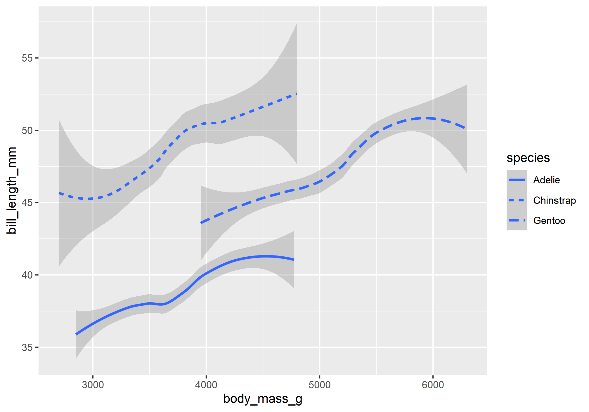
One really important thing to note here is that you can add multiple geometries to the same plot to represent the same data. Simply add them together with +.
ggplot(data = penguins) +
geom_smooth(
mapping = aes(x = body_mass_g, y = bill_length_mm, linetype = species),
) +
geom_point(
mapping = aes(x = body_mass_g, y = bill_length_mm, color = species)
)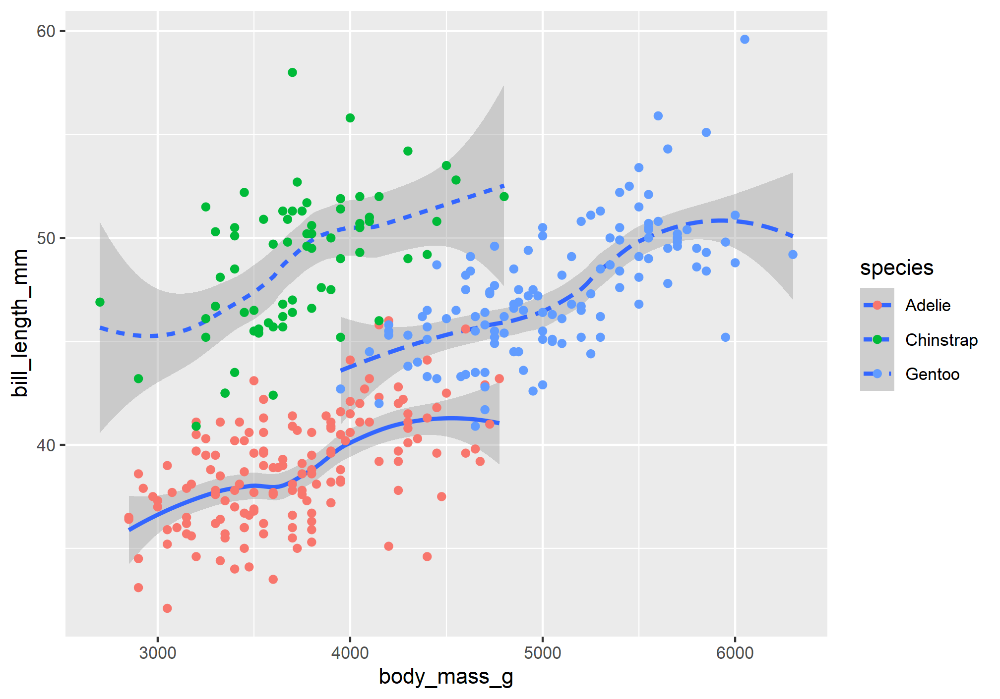
That’s a hideous figure, though it should get the point across. While layering in this way is a really powerful tool for visualizing data, it does have one important drawback. Namely, it violates the DRY principle (Don’t Repeat Yourself), as it specifies the x and y variables twice. This makes it harder to make changes, forcing you to edit the same aesthetic parameters in multiple locations. To avoid this, ggplot2 allows you to specify a common set of aesthetic mappings in the ggplot() function itself. These will then apply globally to all the geometries in the figure.
ggplot(
data = penguins,
mapping = aes(x = body_mass_g, y = bill_length_mm)
) +
geom_smooth(mapping = aes(linetype = species)) +
geom_point(mapping = aes(color = species))Notice that you can still specify specific aesthetic mappings in each geometry function. These will apply only locally to that specific geometry rather than globally to all geometries in the plot. In the same way, you can specify different data for each geometry.
ggplot(
data = penguins,
mapping = aes(x = body_mass_g, y = bill_length_mm)
) +
geom_smooth(data = filter(penguins, species == "Adelie")) +
geom_point(mapping = aes(color = species))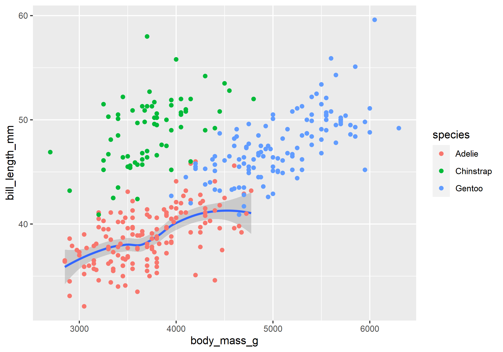
Some of the more important geometries you are likely to use include:
geom_point()geom_line()geom_segment()geom_polygon()geom_boxplot()geom_histogram()geom_density()
We’ll actually cover those last three in the section on plotting distributions. For a complete list of available geometries, see the layers section of the ggplot2 website reference page.
Facets
Sometimes mapping variables to aesthetics can generate a lot of noise and clutter, making it hard to read or interpret a figure. One way to handle this is to split your plot into multiple plots or facets based on levels of a categorical variable like species. To do this for one categorical variable, you use the facet_wrap() function.
ggplot(data = penguins) +
geom_point(
mapping = aes(x = body_mass_g, y = bill_length_mm)
) +
facet_wrap(~ species)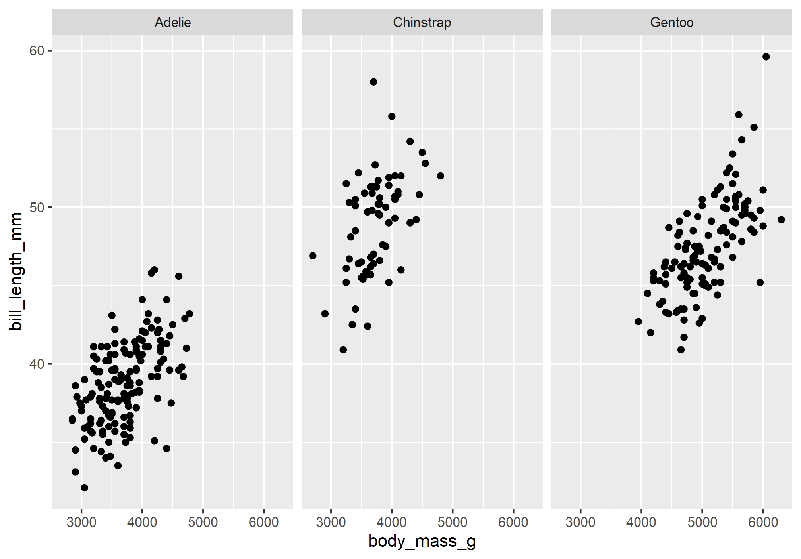
The tilde, ~, can be read as “by”, as in “split the plot by species.” If you want to split the plot by two categorical variables, like species and sex, use the facet_grid() function.
ggplot(data = penguins) +
geom_point(
mapping = aes(x = body_mass_g, y = bill_length_mm)
) +
facet_grid(sex ~ species)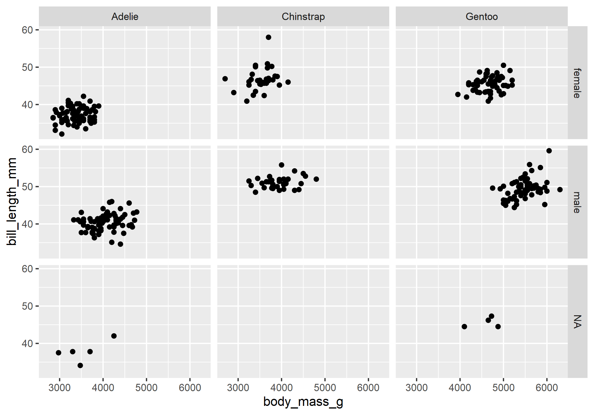
Evidently, there are some penguins for whom the sex is unknown. To remove these penguins from the dataset, you can use the na.omit() function.
ggplot(data = na.omit(penguins)) +
geom_point(
mapping = aes(x = body_mass_g, y = bill_length_mm)
) +
facet_grid(sex ~ species)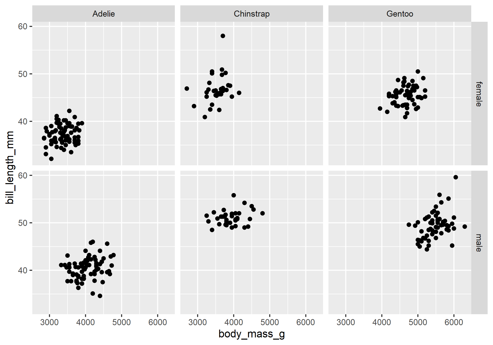
Exercises
- use
facet_wrap()to split the following scatterplot of the penguins data by sex.
ggplot(data = na.omit(penguins)) +
geom_point(
mapping = aes(x = body_mass_g, y = bill_length_mm)
) +
facet_wrap() # <------- insert value hereNow, map the
speciesto the color aesthetic for the point geometry.Use
facet_grid()to split the following scatterplot of the penguins data by species and island.
ggplot(data = na.omit(penguins)) +
geom_point(
mapping = aes(x = body_mass_g, y = bill_length_mm)
) +
facet_grid() # <------- insert value here- What does this tell you about how species are distributed across islands?
Scales
Scales provide the basic structure that determines how data values get mapped to visual properties in a graph. The most obvious example is the axes because these determine where things will be located in the graph, but color scales are also important if you want your figure to provide additional information about your data. Here, we will briefly cover two aspects of scales that you will often want to change: axis labels and color palettes, in particular palettes that are colorblind safe.
Labels
By default, ggplot2 uses the names of the variables in the data to label the axes. This, however, can lead to poor graphics as naming conventions in R are not the same as those you might want to use to visualize your data. Fortunately, ggplot2 provides tools for renaming the axis and plot titles. The one you are likely to use most often is probably the labs() function. Here is a standard usage:
ggplot(data = penguins) +
geom_point(
mapping = aes(x = body_mass_g, y = bill_length_mm)
) +
labs(
x = "Body mass (g)",
y = "Bill length (mm)",
title = "Palmer Penguins"
)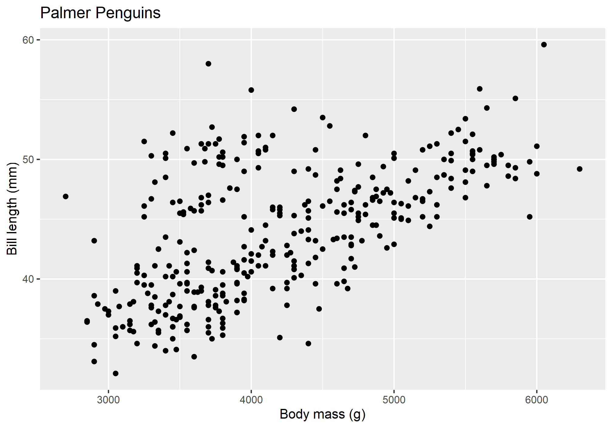
Color Palettes
When you map a variable to an aesthetic property, ggplot2 will supply a default color palette. This is fine if you are just wanting to explore the data yourself, but when it comes to publication-ready graphics, it won’t do. That’s because the default ggplot2 color palette is not colorblind safe. To address this shortcoming, you can specify colorblind safe color palettes using the scale_color_viridis() function from the viridis package. It works like this:
ggplot(data = penguins) +
geom_point(
mapping = aes(x = body_mass_g, y = bill_length_mm, color = species)
) +
labs(
x = "Body mass (g)",
y = "Bill length (mm)",
title = "Palmer Penguins"
) +
scale_color_viridis(
option = "viridis",
discrete = TRUE
)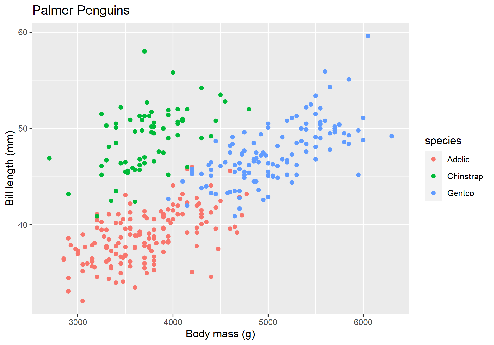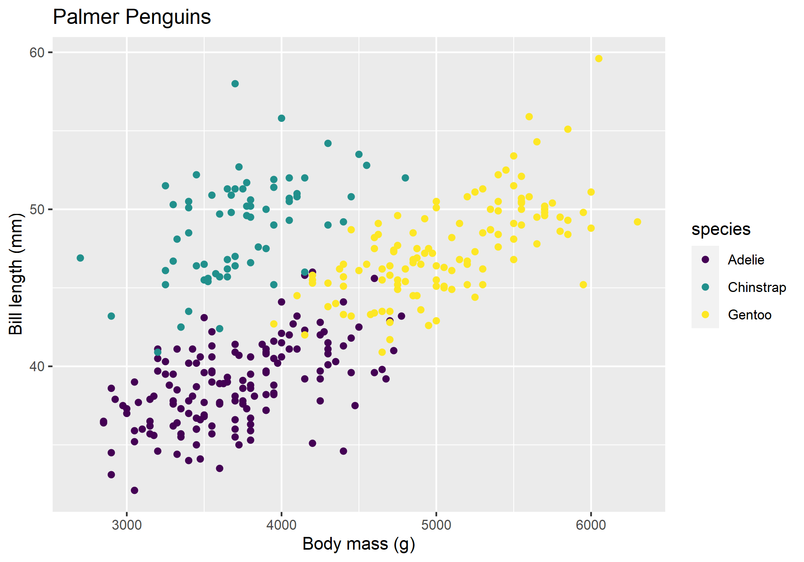
For comparison, I’m showing the viridis scale next to the default ggplot2 scale, so you can see the difference. Two things to note about scale_color_viridis(). First, you choose a specific colorblind safe palette with the option parameter. In this case, I chose viridis, but there are others, including magma, cividis, and inferno, to name a few. Second, if the variable is continuous rather than discrete, you will have to set discrete = FALSE in the function, otherwise it will throw an error.
Exercises
Using the
penguinsdataset, plot body mass (y variable) by bill length (x variable) and change the axis labels to reflect this.Using the
penguinsdataset, plot bill length (y variable) by bill depth (x variable) and change the axis labels to reflect this.Using the code below, try out these different colorblind safe palettes:
- magma
- cividis
- inferno
ggplot(data = penguins) +
geom_point(
mapping = aes(x = body_mass_g, y = bill_length_mm, color = species)
) +
labs(
x = "Body mass (g)",
y = "Bill length (mm)",
title = "Palmer Penguins"
) +
scale_color_viridis(
option = , # <------- insert value here
discrete = TRUE
)Themes
To control the display of non-data elements in a figure, you can specify a theme. This is done with the theme() function. Using this can get pretty complicated, pretty quick, so rather than elaborate on it in detail, I want to draw your attention to pre-defined themes that you can use to modify your plots in a consistent way.
Here is an example of the black and white theme, which removes filled background grid squares, leaving only the grid lines.
ggplot(data = penguins) +
geom_point(
mapping = aes(x = body_mass_g, y = bill_length_mm, color = species)
) +
labs(
x = "Body mass (g)",
y = "Bill length (mm)",
title = "Palmer Penguins"
) +
theme_bw()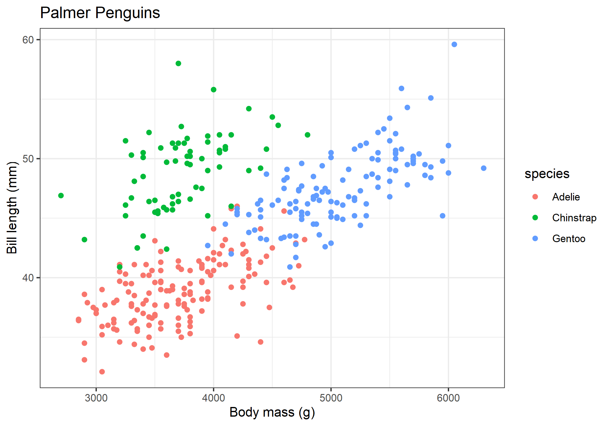
Exercises
- Complete the code below, trying out each separate theme:
theme_minimal()theme_classic()theme_void()
ggplot(data = penguins) +
geom_point(
mapping = aes(x = body_mass_g, y = bill_length_mm, color = species)
) +
labs(
x = "Body mass (g)",
y = "Bill length (mm)",
title = "Palmer Penguins"
) +
theme_ # <------- insert value hereHomework
- Load data. For this homework exercise, we’ll work with the
DartPointsdataset from thearchdatapackage. When you ranlibrary(archdata), this dataset should have been attached to your current R session, so don’t worry about loading it into R. It’s already there! - Summary statistics. Let’s summarize these data now.
- Use
head()to print out the first 10 rows of the table. - Use
mean()andmedian()on theLength,Width,Thickness, andWeightvariables. (Hint: useDartPoints$<VARIABLE>as inDartPoints$Length.) - Use
var()andsd()on the same. - Now use
skim()to summarize theDartPointsdata.
- Use
- Graphics. And now to visualize them.
- Use
ggplot()to make a scatterplot showing dart point length as a function of weight. (Hint: usegeom_point().) - Is there a trend?
- Map the dart point
Name(this is the dart point type) to thecoloraesthetic. (Hint: this should go inside theaes()mapping!) - Do you see any meaningful differences between dart point types?
- Change the
sizeof all points to 2.5. (Hint: this should go outside theaes()mapping but insidegeom_point()!) - Use
scale_color_viridis()to make the color scale colorblind safe. Feel free to use whichever palette you prefer. (Hint: dart point type is a categorical variable, so you need to setdiscrete = TRUE!) - Try out
facet_wrap()on the dart pointNamevariable. - Does this make it easier or harder to see differences between types?
- Use